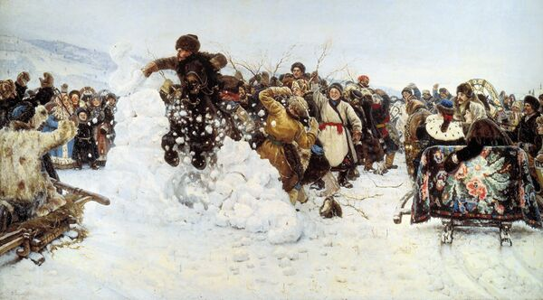
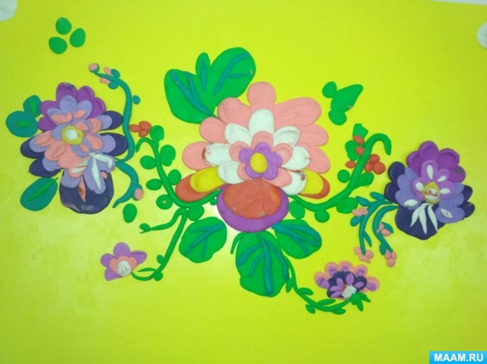
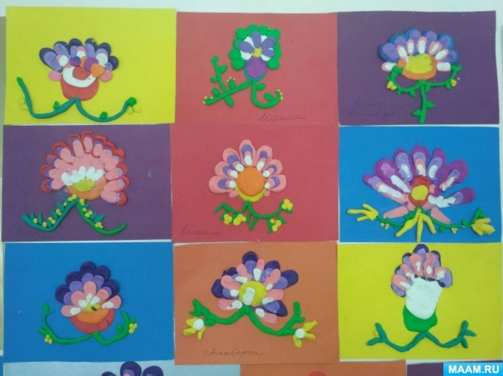

Конспект непосредственно образовательной деятельности в подготовительной группе по пластилинографии (рисование пластилином) «Тюменский ковер». Знакомство детей с историей и особенностями тюменских ковров, развитие творческих способностей и мелкой моторики.
Цель
Создание ковра в технике пластилинография.
Задачи
- Познакомить с ишимским ковром, его историей, особенностями.
- Учить выполнять ковер в технике пластилинография.
- Техника многослойная. Пластилин наносится на основу мазками в несколько слоёв, сочетаются разнообразные цвета и оттенки материала, получается объёмное, сложное изображение.
- Способствовать развитию творческих способностей.
- Развивать мелкую моторику, зрительное и тактильное восприятие.
- Воспитывать внимание, терпение, трудолюбие.
Словарная работа
Материалы
- Яркий пластилин
- Основа картон
- Доска для лепки
- Стеки и различные приспособления для создания нужной фактуры
- Салфетки для рук
Ход НОД
Вводная часть
Воспитатель: Ребята, вам интересно было бы узнать историю Тюменских ковров?
Дети: (ответы детей)
История тюменских ковров

Первые упоминания о коврах встречаются в документах XVI века

Тюменский уезд стал крупнейшим центром ковроткачества в XVIII веке
Воспитатель: Давным-давно такие ковры не умели делать в нашем крае. Возникновение ковроткачества в Сибири считают перенятым от бухарцев — выходцев из Бухарского ханства. Суровая зима и знаменитые сибирские морозы ухудшали условия поездок. Ямщики, чтобы не замерзнуть в пути, утепляли свои сани коврами. Иногда и сами укрывались ими. Позже ковры стали использоваться и в быту. Использовали ковры и для того, чтобы показать свой статус.

Позже появились целые ковровые фабрики в городах Тюмени, Ишиме, Тобольске
Воспитатель: Раньше девочек начинали учить изготавливать ковры, когда им исполнялось семь лет.
Воспитатель: В основе узора на коврах были белые лебеди или лошадиные головы в венках из цветов.
Воспитатель: Многие мастерицы в середине ковра изображали цветы (розы, маки) чаще ярко-красных цветов, и зеленые листья на черном фоне.
Воспитатель: Черный фон ковра символизирует плодородную землю и то изобилие, которое она дарит людям. Яркие букеты напоминают о красках благодатного лета. Также сочетание черного и красного цвета на ковре символизировало могущество и богатство. Ковры делали только из чистой овечьей шерсти.
Физминутка «Мы на коврике стоим»
(Повороты головы вправо, влево, вверх, вниз)
(Изображают как ветерок качает деревья)
(Повороты корпуса вправо, влево)
Практическая деятельность
Воспитатель: Предлагаю детям изготовить подобный ковер в технике пластилинографии. Дети на кусочках цветного картона изображают цветы.
Подведение итогов
Воспитатель: В конце занятия составляется общий ковер.
Дети знакомятся с культурным наследием родного края, развивают творческие способности и мелкую моторику, создавая собственные миниатюрные ковры в традиционном стиле.
Педагогические рекомендации
- Подготовить образцы тюменских ковров для наглядности
- Использовать музыкальное сопровождение во время практической работы
- Организовать выставку готовых работ в раздевалке для родителей
- Дополнительно можно провести беседу о других народных промыслах России